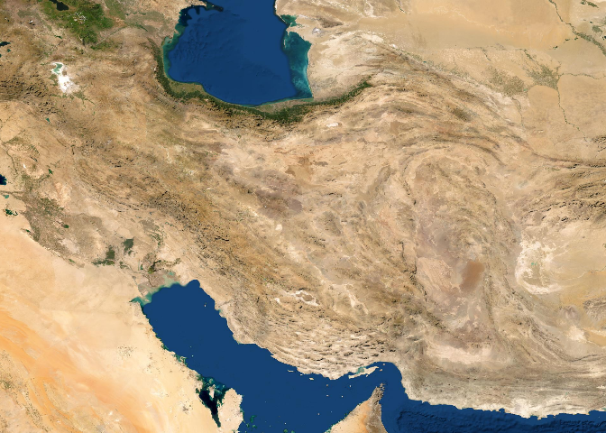
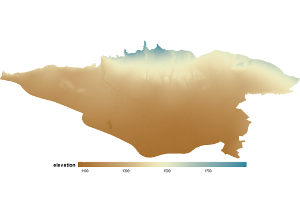
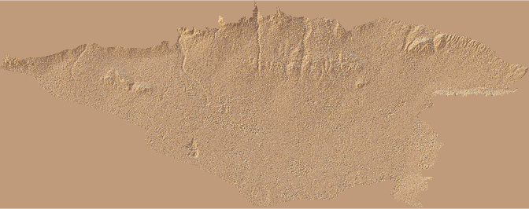

The goal of IRMaps is to prepare geographical maps and divisions of Iran.
Installation
You can install the development version of IRMaps from GitHub with:
# install.packages("devtools")
devtools::install_github("Ehyaei/IRMaps",subdir = "r-package")Available Maps
The following maps in the form of sf object, are included in the package.
- Province (استان)
- Country (شهرستان)
- District (بخش)
- City (شهر)
- Rural District (دهستان)
- Geographical Features (عوارض جغرافیایی)
library(IRMaps)
library(ggplot2)
library(dplyr)
provinces <- irProvinces()
counties <- irCounties()
districts <- irDistricts()
rurals <- irRurals()
map_Plotter <- function(map){
ggplot(map)+
geom_sf(aes(fill = area), size = 0.1, color = "white") +
scale_fill_map(palette = "TealRode")+
theme_map()+
theme(legend.position = "none")+
fullView()
}
gridExtra::grid.arrange(
map_Plotter(provinces), map_Plotter(counties),
map_Plotter(districts),map_Plotter(rurals),
nrow = 2)
data_map <- merge(provinces, IRMaps::iran_population, by.x = "name_en", by.y = "Province")
ggplot(data_map,aes(fill = RuralareasMale/RuralareasFemale))+
geom_sf(color = "white",size = 0.1)+
scale_fill_map(palette = "TealRode")+
labs(fill = "Gender Ratio")+
theme_map()+
fullView()
Add Raster Tiles
raster_tile <- get_raster_tile(iran_border, provider = "Esri.WorldImagery",zoom = 7)
ggplot() +
geom_raster(data = raster_tile, aes(x, y, fill = hex)) +
scale_fill_identity() +
theme_map()+
fullView()
Download map vectors from OSM
Tehran = districts[districts$name_en == "Tehran",]
osm_theran = get_osm_tile(Tehran)
ggplot()+
geom_sf(data = Tehran, color = "#FE9F45", fill = "#FE9F45")+
geom_sf(data = osm_theran$osm_lines, color = "black", size= 0.2)+
theme_map()+
fullView()
Download Elevation Data
tehran = rural[rural$name_en == "Tehran", ]
dem_tehran = get_elevation_tile(tehran, 12)
ggplot(dem_tehran, aes(x, y, fill = elevation))+
geom_raster()+
theme_map()+
fullView()+
scale_fill_map(palette = "Earth")+
coord_fixed()
library(rayshader)
library(reshape2)
acast(dem_tehran, x~y, value.var="elevation") -> elmat
elmat[,ncol(elmat):1] %>%
sphere_shade(texture = "desert") %>%
plot_map()